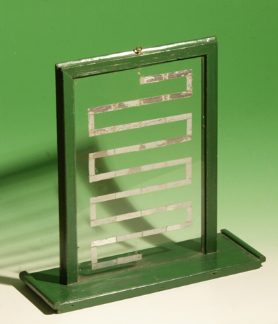

Quadro scintillante
Scuola di provenienza: Istituto agrario "F. De Sanctis", Avellino
Settore: Elettrologia
Costruttori: Sconosciuto
Materiali: Legno, vetro, losanghe di stagnola
Accessori: Nessuno
Stato di conservazione: Buono
Descrizione: Quest’apparecchio è una variante dei tubi scintillanti. Si tratta di un telaio di legno recante due laste di vetro accoppiate. Su una di esse, interamente, è incollata una lunga e stretta striscia di stagnola a zig zag lungo la quale sono state fatte piccolissime interruzioni. Gli estremi della striscia terminano rispettivamente a un anello e a una sferetta di ottone. Collegando lo strumento con una macchina elettrostatica o una bottiglia di Leyda, le scintille prodotte dalla scarica "fanno ponte" sulle interruzioni della strisciolina.